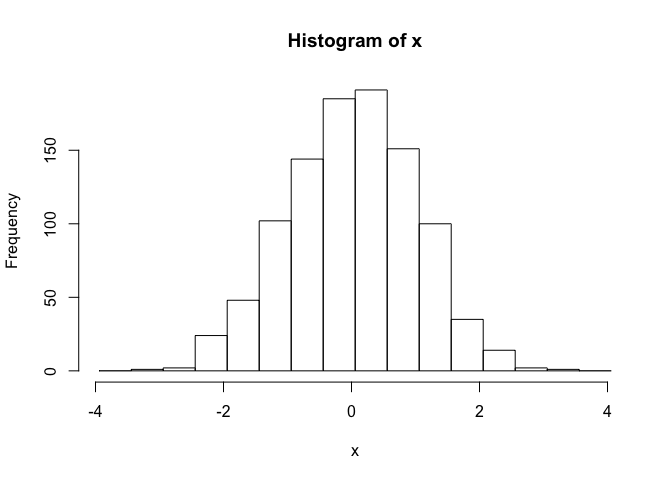

R and RStudio
What is R?
R is a language and environment for statistical computing and graphics developed in 1993. It provides a wide variety of statistical and graphical techniques (linear and nonlinear modeling, statistical tests, time series analysis, classification, clustering, …), and is highly extensible, meaning that the user community can write new R tools. It is a GNU project (Free and Open Source).
The R language has its roots in the S language and environment which was developed at Bell Laboratories (formerly AT&T, now Lucent Technologies) by John Chambers and colleagues. R was created by Ross Ihaka and Robert Gentleman at the University of Auckland, New Zealand, and now, R is developed by the R Development Core Team, of which Chambers is a member. R is named partly after the first names of the first two R authors (Robert Gentleman and Ross Ihaka), and partly as a play on the name of S. R can be considered as a different implementation of S. There are some important differences, but much code written for S runs unaltered under R.
Some of R’s strengths:
- The ease with which well-designed publication-quality plots can be produced, including mathematical symbols and formulae where needed. Great care has been taken over the defaults for the minor design choices in graphics, but the user retains full control.
- It compiles and runs on a wide variety of UNIX platforms and similar systems (including FreeBSD and Linux), Windows and MacOS.
- R can be extended (easily) via packages.
- R has its own LaTeX-like documentation format, which is used to supply comprehensive documentation, both on-line in a number of formats and in hardcopy.
- It has a vast community both in academia and in business.
- It’s FREE!
The R environment
R is an integrated suite of software facilities for data manipulation, calculation and graphical display. It includes
- an effective data handling and storage facility,
- a suite of operators for calculations on arrays, in particular matrices,
- a large, coherent, integrated collection of intermediate tools for data analysis,
- graphical facilities for data analysis and display either on-screen or on hardcopy, and
- a well-developed, and effective programming language which includes conditionals, loops, user-defined recursive functions and input and output facilities.
The term “environment” is intended to characterize it as a fully planned and coherent system, rather than an incremental accretion of very specific and inflexible tools, as is frequently the case with other data analysis software.
R, like S, is designed around a true computer language, and it allows users to add additional functionality by defining new functions. Much of the system is itself written in the R dialect of S, which makes it easy for users to follow the algorithmic choices made. For computationally-intensive tasks, C, C++ and Fortran code can be linked and called at run time. Advanced users can write C code to manipulate R objects directly.
Many users think of R as a statistics system. The R group prefers to think of it of an environment within which statistical techniques are implemented.
The R Homepage
The R homepage has a wealth of information on it,
R-project.org
On the homepage you can:
- Learn more about R
- Download R
- Get Documentation (official and user supplied)
- Get access to CRAN ‘Comprehensive R archival network’
Interface for R
There are many ways one can interface with R language. Here are a few popular ones:
- RStudio
- RGui
- Jupyter and R notebooks
- text editors, such as vi(m), Emacs…
RStudio
RStudio started in 2010, to offer R a more full featured integrated development environment (IDE) and modeled after matlab’s IDE.
RStudio has many features:
- syntax highlighting
- code completion
- smart indentation
- “Projects”
- workspace browser and data viewer
- embedded plots
- Markdown notebooks, Sweave authoring and knitr with one click pdf or html
- runs on all platforms and over the web
- etc. etc. etc.
RStudio and its team have contributed to many R packages.[13] These include:
- Tidyverse – R packages for data science, including ggplot2, dplyr, tidyr, and purrr
- Shiny – An interactive web technology
- RMarkdown – Insert R code into markdown documents
- knitr – Dynamic reports combining R, TeX, Markdown & HTML
- packrat – Package dependency tool
- devtools – Package development tool
RStudio Cheat Sheets: rstudio-ide.pdf
Topics covered in this introduction to R
- Basic concepts
- Basic data types in R
- Import and export data in R
- Functions in R
- Basic statistics in R
- Simple data visulization in R
- Install packages in R
- Save data in R session
Topic 1. Basic concepts
There are three concepts that we should be familiar with before working in R:
Assignment Operators in R
| Operator |
Description |
| <-, = |
Assignment |
Arithmetic Operators in R
| Operator |
Description |
| \+ |
Addition |
| \- |
Subtraction |
| \* |
Multiplication |
| / |
Division |
| ^ |
Exponent |
| %% |
Modulus |
| %/% |
Integer Division |
Relational Operators in R
| Operator |
Description |
| < |
Less than |
| > |
Greater than |
| <= |
Less than or equal to |
| >= |
Greater than or equal to |
| == |
Equal to |
| != |
Not equal to |
Logical Operators in R
| Operator |
Description |
| ! |
Logical NOT |
| & |
Element-wise logical AND |
| && |
Logical AND |
| | |
Element-wise logical OR |
| || |
Logical OR |
Functions are essential in all programming languages. A function takes zero or more parameters and return a result. The way to use a function in R is:
function.name(parameter1=value1, …)
A variable is a named storage. The name of a variable can have letters, numbers, dot and underscore. However, a valid variable name cannot start with a underscore or a number, or start with a dot that is followed by a number.
Topic 2. Basic data types in R
Simple variables: variables that have a numeric value, a character value (such as a string), or a logical value (True or False)
Examples of numeric values.
```{.r .colsel}
assign number 150 to variable a.
a <- 150
a
[1] 150
```{.r .colsel}
# assign a number in scientific format to variable b.
b <- 3e-2
b
[1] 0.03
Examples of character values.
```{.r .colsel}
assign a string “Professor” to variable title
title <- “Professor”
title
[1] “Professor”
```{.r .colsel}
# assign a string "Hello World" to variable hello
hello <- "Hello World"
hello
[1] "Hello World"
Examples of logical values.
```{.r .colsel}
assign logical value “TRUE” to variable is_female
is_female <- TRUE
is_female
[1] TRUE
```{.r .colsel}
# assign logical value "FALSE" to variable is_male
is_male <- FALSE
is_male
[1] FALSE
```{.r .colsel}
assign logical value to a variable by logical operation
age <- 20
is_adult <- age > 18
is_adult
[1] TRUE
To find out the type of variable.
```{.r .colsel}
class(is_female)
[1] "logical"
```{.r .colsel}
To check whether the variable is a specific type
is.numeric(hello)
[1] FALSE
```{.r .colsel}
is.numeric(a)
[1] TRUE
```{.r .colsel}
is.character(hello)
[1] TRUE
The rule to convert a logical variable to numeric: TRUE > 1, FALSE > 0
```{.r .colsel}
as.numeric(is_female)
[1] 1
```{.r .colsel}
as.numeric(is_male)
[1] 0
R does not know how to convert a numeric variable to a character variable.
```{.r .colsel}
b
[1] 0.03
```{.r .colsel}
as.character(b)
[1] “0.03”
# Vectors: a vector is a combination of multiple values(numeric, character or logical) in the same object. A vector is created using the function c() (for concatenate).
```{.r .colsel}
friend_ages <- c(21, 27, 26, 32)
friend_ages
[1] 21 27 26 32
```{.r .colsel}
friend_names <- c(“Mina”, “Ella”, “Anna”, “Cora”)
friend_names
[1] “Mina” “Ella” “Anna” “Cora”
One can give names to the elements of a vector.
```{.r .colsel}
# assign names to a vector by specifying them
names(friend_ages) <- c("Mina", "Ella", "Anna", "Carla")
friend_ages
Mina Ella Anna Carla
21 27 26 32
```{.r .colsel}
assign names to a vector using another vector
names(friend_ages) <- friend_names
friend_ages
Mina Ella Anna Cora
21 27 26 32
Or One may create a vector with named elements from scratch.
```{.r .colsel}
friend_ages <- c(Mina=21, Ella=27, Anna=26, Cora=32)
friend_ages
Mina Ella Anna Cora
21 27 26 32
To find out the length of a vector:
```{.r .colsel}
length(friend_ages)
[1] 4
To access elements of a vector: by index, or by name if it is a named vector.
```{.r .colsel}
friend_ages[2]
Ella
27
```{.r .colsel}
friend_ages[“Ella”]
Ella
27
```{.r .colsel}
friend_ages[c(1,3)]
Mina Anna
21 26
```{.r .colsel}
friend_ages[c(“Mina”, “Anna”)]
Mina Anna
21 26
```{.r .colsel}
# selecting elements of a vector by excluding some of them.
friend_ages[-3]
Mina Ella Cora
21 27 32
To select a subset of a vector can be done by logical vector.
```{.r .colsel}
my_friends <- c(“Mina”, “Ella”, “Anna”, “Cora”)
my_friends
[1] “Mina” “Ella” “Anna” “Cora”
```{.r .colsel}
has_child <- c("TRUE", "TRUE", "FALSE", "TRUE")
has_child
[1] "TRUE" "TRUE" "FALSE" "TRUE"
```{.r .colsel}
my_friends[has_child == “TRUE”]
[1] “Mina” “Ella” “Cora”
# NOTE: a vector can only hold elements of the same type.
# Matrices: A matrix is like an Excel sheet containing multiple rows and columns. It is used to combine vectors of the same type.
```{.r .colsel}
col1 <- c(1,3,8,9)
col2 <- c(2,18,27,10)
col3 <- c(8,37,267,19)
my_matrix <- cbind(col1, col2, col3)
my_matrix
col1 col2 col3
[1,] 1 2 8
[2,] 3 18 37
[3,] 8 27 267
[4,] 9 10 19
```{.r .colsel}
rownames(my_matrix) <- c(“row1”, “row2”, “row3”, “row4”)
my_matrix
col1 col2 col3
row1 1 2 8
row2 3 18 37
row3 8 27 267
row4 9 10 19
```{.r .colsel}
t(my_matrix)
row1 row2 row3 row4
col1 1 3 8 9
col2 2 18 27 10
col3 8 37 267 19
To find out the dimension of a matrix:
```{.r .colsel}
ncol(my_matrix)
[1] 3
```{.r .colsel}
nrow(my_matrix)
[1] 4
```{.r .colsel}
dim(my_matrix)
[1] 4 3
Accessing elements of a matrix is done in similar ways to accessing elements of a vector.
```{.r .colsel}
my_matrix[1,3]
[1] 8
```{.r .colsel}
my_matrix[“row1”, “col3”]
[1] 8
```{.r .colsel}
my_matrix[1,]
col1 col2 col3
1 2 8
```{.r .colsel}
my_matrix[,3]
row1 row2 row3 row4
8 37 267 19
```{.r .colsel}
my_matrix[col3 > 20,]
col1 col2 col3
row2 3 18 37
row3 8 27 267
Calculations with matrices.
```{.r .colsel}
my_matrix * 3
col1 col2 col3
row1 3 6 24
row2 9 54 111
row3 24 81 801
row4 27 30 57
```{.r .colsel}
log10(my_matrix)
col1 col2 col3
row1 0.0000000 0.301030 0.903090
row2 0.4771213 1.255273 1.568202
row3 0.9030900 1.431364 2.426511
row4 0.9542425 1.000000 1.278754
Total of each row.
```{.r .colsel}
rowSums(my_matrix)
row1 row2 row3 row4
11 58 302 38
Total of each column.
```{.r .colsel}
colSums(my_matrix)
col1 col2 col3
21 57 331
It is also possible to use the function apply() to apply any statistical functions to rows/columns of matrices. The advantage of using apply() is that it can take a function created by user.
The simplified format of apply() is as following:
apply(X, MARGIN, FUN)
X: data matrix
MARGIN: possible values are 1 (for rows) and 2 (for columns)
FUN: the function to apply on rows/columns
To calculate the mean of each row.
```{.r .colsel}
apply(my_matrix, 1, mean)
row1 row2 row3 row4
3.666667 19.333333 100.666667 12.666667
To calculate the median of each row
```{.r .colsel}
apply(my_matrix, 1, median)
row1 row2 row3 row4
2 18 27 10
Factors: a factor represents categorical or groups in data. The function factor() can be used to create a factor variable.
```{.r .colsel}
friend_groups <- factor(c(1,2,1,2))
friend_groups
[1] 1 2 1 2
Levels: 1 2
In R, categories are called factor levels. The function levels() can be used to access the factor levels.
```{.r .colsel}
levels(friend_groups)
[1] "1" "2"
Change the factor levels.
```{.r .colsel}
levels(friend_groups) <- c(“best_friend”, “not_best_friend”)
friend_groups
[1] best_friend not_best_friend best_friend not_best_friend
Levels: best_friend not_best_friend
Change the order of levels.
```{.r .colsel}
levels(friend_groups) <- c("not_best_friend", "best_friend")
friend_groups
[1] not_best_friend best_friend not_best_friend best_friend
Levels: not_best_friend best_friend
By default, the order of factor levels is taken in the order of numeric or alphabetic.
```{.r .colsel}
friend_groups <- factor(c(“not_best_friend”, “best_friend”, “not_best_friend”, “best_friend”))
friend_groups
[1] not_best_friend best_friend not_best_friend best_friend
Levels: best_friend not_best_friend
The factor levels can be specified when creating the factor, if the order does not follow the default rule.
```{.r .colsel}
friend_groups <- factor(c("not_best_friend", "best_friend", "not_best_friend", "best_friend"), levels=c("not_best_friend", "best_friend"))
friend_groups
[1] not_best_friend best_friend not_best_friend best_friend
Levels: not_best_friend best_friend
If you want to know the number of individuals at each levels, there are two functions.
```{.r .colsel}
summary(friend_groups)
not_best_friend best_friend
2 2
```{.r .colsel}
table(friend_groups)
friend_groups
not_best_friend best_friend
2 2
Data frames: a data frame is like a matrix but can have columns with different types (numeric, character, logical).
A data frame can be created using the function data.frame().
```{.r .colsel}
creating a data frame using previously defined vectors
friends <- data.frame(name=friend_names, age=friend_ages, child=has_child)
friends
name age child
Mina Mina 21 TRUE
Ella Ella 27 TRUE
Anna Anna 26 FALSE
Cora Cora 32 TRUE
To check whether a data is a data frame, use the function is.data.frame().
```{.r .colsel}
is.data.frame(friends)
[1] TRUE
```{.r .colsel}
is.data.frame(my_matrix)
[1] FALSE
One can convert a object to a data frame using the function as.data.frame().
```{.r .colsel}
class(my_matrix)
[1] "matrix"
```{.r .colsel}
my_data <- as.data.frame(my_matrix)
class(my_data)
[1] “data.frame”
A data frame can be transposed in the similar way as a matrix.
```{.r .colsel}
my_data
col1 col2 col3
row1 1 2 8
row2 3 18 37
row3 8 27 267
row4 9 10 19
```{.r .colsel}
t(my_data)
row1 row2 row3 row4
col1 1 3 8 9
col2 2 18 27 10
col3 8 37 267 19
To obtain a subset of a data frame can be done in similar ways as we have discussed: by index, by row/column names, or by logical values.
```{.r .colsel}
friends["Mina",]
name age child
Mina Mina 21 TRUE
```{.r .colsel}
The columns of a data frame can be referred to by the names of the columns
friends
name age child
Mina Mina 21 TRUE
Ella Ella 27 TRUE
Anna Anna 26 FALSE
Cora Cora 32 TRUE
```{.r .colsel}
friends$age
[1] 21 27 26 32
```{.r .colsel}
friends[friends$age > 26,]
name age child
Ella Ella 27 TRUE
Cora Cora 32 TRUE
```{.r .colsel}
friends[friends$child == "TRUE",]
name age child
Mina Mina 21 TRUE
Ella Ella 27 TRUE
Cora Cora 32 TRUE
Function subset() can also be used to get a subset of a data frame.
```{.r .colsel}
select friends that are older than 26
subset(friends, age > 26)
name age child
Ella Ella 27 TRUE
Cora Cora 32 TRUE
```{.r .colsel}
# select the information of the ages of friends
subset(friends, select=age)
age
Mina 21
Ella 27
Anna 26
Cora 32
A data frame can be extended.
```{.r .colsel}
friends$married <- c(“YES”, “YES”, “NO”, “YES”)
friends
name age child married
Mina Mina 21 TRUE YES
Ella Ella 27 TRUE YES
Anna Anna 26 FALSE NO
Cora Cora 32 TRUE YES
A data frame can also be extended using the functions cbind() and rbind().
```{.r .colsel}
# add a column that has the information on the salaries of friends
cbind(friends, salary=c(4000, 8000, 2000, 6000))
name age child married salary
Mina Mina 21 TRUE YES 4000
Ella Ella 27 TRUE YES 8000
Anna Anna 26 FALSE NO 2000
Cora Cora 32 TRUE YES 6000
Lists: a list is an ordered collection of objects, which can be any type of R objects (vectors, matrices, data frames).
A list can be created using the function list().
```{.r .colsel}
my_list <- list(mother=”Sophia”, father=”John”, sisters=c(“Anna”, “Emma”), sister_age=c(5, 10))
my_list
$mother
[1] “Sophia”
##
$father
[1] “John”
##
$sisters
[1] “Anna” “Emma”
##
$sister_age
[1] 5 10
```{.r .colsel}
# names of elements in the list
names(my_list)
[1] "mother" "father" "sisters" "sister_age"
```{.r .colsel}
number of elements in the list
length(my_list)
[1] 4
To access elements of a list can be done using its name or index.
```{.r .colsel}
my_list$mother
[1] "Sophia"
```{.r .colsel}
my_list[[“mother”]]
[1] “Sophia”
```{.r .colsel}
my_list[[1]]
[1] "Sophia"
```{.r .colsel}
my_list[[3]]
[1] “Anna” “Emma”
```{.r .colsel}
my_list[[3]][2]
[1] "Emma"
Topic 3. Import and export data in R
R base function read.table() is a general funciton that can be used to read a file in table format. The data will be imported as a data frame.
```{.r .colsel}
To read a local file. If you have downloaded the raw_counts.txt file to your local machine, you may use the following command to read it in, by providing the full path for the file location. The way to specify the full path is the same as taught in the command line session.
data <- read.table(file=”/Users/jli/Downloads/raw_counts.txt”, sep=”\t”, header=T, stringsAsFactors=F)
There is a very convenient way to read files from the internet.
data <- read.table(file=”https://raw.githubusercontent.com/ucdavis-bioinformatics-training/2017-August-Variant-Analysis-Workshop/master/friday/Intro2R/raw_counts.txt”, sep=”\t”, header=T, stringsAsFactors=F)
Take a look at the beginning part of the data frame.
```{.r .colsel}
head(data)
C61 C62 C63 C64 C91 C92 C93 C94 I561 I562 I563 I564 I591
AT1G01010 322 346 256 396 372 506 361 342 638 488 440 479 770
AT1G01020 149 87 162 144 189 169 147 108 163 141 119 147 182
AT1G01030 15 32 35 22 24 33 21 35 18 8 54 35 23
AT1G01040 687 469 568 651 885 978 794 862 799 769 725 715 811
AT1G01046 1 1 5 4 5 3 0 2 4 3 1 0 2
AT1G01050 1447 1032 1083 1204 1413 1484 1138 938 1247 1516 984 1044 1374
I592 I593 I594 I861 I862 I863 I864 I891 I892 I893 I894
AT1G01010 430 656 467 143 453 429 206 567 458 520 474
AT1G01020 156 153 177 43 144 114 50 161 195 157 144
AT1G01030 8 16 24 42 17 22 39 26 28 39 30
AT1G01040 567 831 694 345 575 605 404 735 651 725 591
AT1G01046 8 8 1 0 4 0 3 5 7 0 5
AT1G01050 1355 1437 1577 412 1338 1051 621 1434 1552 1248 1186
Depending on the format of the file, several variants of read.table() are available to make reading a file easier.
read.csv(): for reading “comma separated value” files (.csv).
read.csv2(): variant used in countries that use a comma “,” as decimal point and a semicolon “;” as field separators.
read.delim(): for reading “tab separated value” files (“.txt”). By default, point(“.”) is used as decimal point.
read.delim2(): for reading “tab separated value” files (“.txt”). By default, comma (“,”) is used as decimal point.
```{.r .colsel}
We are going to read a file over the internet by providing the url of the file.
data2 <- read.csv(file=”https://raw.githubusercontent.com/ucdavis-bioinformatics-training/2017-August-Variant-Analysis-Workshop/master/friday/Intro2R/raw_counts.csv”, stringsAsFactors=F)
To look at the file:
head(data2)
C61 C62 C63 C64 C91 C92 C93 C94 I561 I562 I563 I564 I591
AT1G01010 322 346 256 396 372 506 361 342 638 488 440 479 770
AT1G01020 149 87 162 144 189 169 147 108 163 141 119 147 182
AT1G01030 15 32 35 22 24 33 21 35 18 8 54 35 23
AT1G01040 687 469 568 651 885 978 794 862 799 769 725 715 811
AT1G01046 1 1 5 4 5 3 0 2 4 3 1 0 2
AT1G01050 1447 1032 1083 1204 1413 1484 1138 938 1247 1516 984 1044 1374
I592 I593 I594 I861 I862 I863 I864 I891 I892 I893 I894
AT1G01010 430 656 467 143 453 429 206 567 458 520 474
AT1G01020 156 153 177 43 144 114 50 161 195 157 144
AT1G01030 8 16 24 42 17 22 39 26 28 39 30
AT1G01040 567 831 694 345 575 605 404 735 651 725 591
AT1G01046 8 8 1 0 4 0 3 5 7 0 5
AT1G01050 1355 1437 1577 412 1338 1051 621 1434 1552 1248 1186
R base function write.table() can be used to export data to a file.
```{.r .colsel}
# To write to a file called "output.txt" in your current working directory.
write.table(data2[1:20,], file="output.txt", sep="\t", quote=F, row.names=T, col.names=T)
It is also possible to export data to a csv file.
write.csv()
write.csv2()
\newpage
Topic 4. Functions in R
Invoking a function by its name, followed by the parenthesis and zero or more arguments.
```{.r .colsel}
to find out the current working directory
getwd()
```{.r .colsel}
# to set a different working directory, use setwd
setwd("/Users/jli/Desktop")
# to list all variables in the environment
ls()
[1] "a" "actg" "actgm" "age"
[5] "b" "col1" "col2" "col3"
[9] "colFmt" "data" "data2" "fq"
[13] "fqm" "friend_ages" "friend_groups" "friend_names"
[17] "friends" "full" "g" "gc"
[21] "h" "has_child" "hello" "i"
[25] "i2" "ic" "id" "is"
[29] "is_adult" "is_female" "is_male" "j"
[33] "k" "l" "my_data" "my_friends"
[37] "my_list" "my_matrix" "new_is" "rl"
[41] "sn" "title" "x" "y"
```{.r .colsel}
to create a vector from 2 to 3, using increment of 0.1
seq(2, 3, by=0.1)
[1] 2.0 2.1 2.2 2.3 2.4 2.5 2.6 2.7 2.8 2.9 3.0
```{.r .colsel}
# to create a vector with repeated elements
rep(1:3, times=3)
[1] 1 2 3 1 2 3 1 2 3
```{.r .colsel}
rep(1:3, each=3)
[1] 1 1 1 2 2 2 3 3 3
```{.r .colsel}
# to get help information on a function in R: ?function.name
?seq
?sort
?rep
```{.r .colsel}
str(data2)
‘data.frame’: 33602 obs. of 24 variables:
$ C61 : int 322 149 15 687 1 1447 2667 297 0 74 …
$ C62 : int 346 87 32 469 1 1032 2472 226 0 79 …
$ C63 : int 256 162 35 568 5 1083 2881 325 0 138 …
$ C64 : int 396 144 22 651 4 1204 2632 341 0 85 …
$ C91 : int 372 189 24 885 5 1413 5120 199 0 68 …
$ C92 : int 506 169 33 978 3 1484 6176 180 0 41 …
$ C93 : int 361 147 21 794 0 1138 7088 195 0 110 …
$ C94 : int 342 108 35 862 2 938 6810 107 0 81 …
$ I561: int 638 163 18 799 4 1247 2258 377 0 72 …
$ I562: int 488 141 8 769 3 1516 1808 534 0 76 …
$ I563: int 440 119 54 725 1 984 2279 300 0 184 …
$ I564: int 479 147 35 715 0 1044 2299 223 0 156 …
$ I591: int 770 182 23 811 2 1374 4755 298 0 96 …
$ I592: int 430 156 8 567 8 1355 3128 318 0 70 …
$ I593: int 656 153 16 831 8 1437 4419 397 0 77 …
$ I594: int 467 177 24 694 1 1577 3726 373 0 77 …
$ I861: int 143 43 42 345 0 412 1452 86 0 174 …
$ I862: int 453 144 17 575 4 1338 1516 266 0 113 …
$ I863: int 429 114 22 605 0 1051 1455 281 0 69 …
$ I864: int 206 50 39 404 3 621 1429 164 0 176 …
$ I891: int 567 161 26 735 5 1434 3867 230 0 69 …
$ I892: int 458 195 28 651 7 1552 4718 270 0 80 …
$ I893: int 520 157 39 725 0 1248 4580 220 0 81 …
$ I894: int 474 144 30 591 5 1186 3575 229 0 62 …
# Two special functions: lapply() and sapply()
lapply() is to apply a given function to every element of a vector and obtain a list as results.
The difference between lapply() and apply() is that lapply() can be applied on objects like dataframes, lists or vectors. Function apply() only works on an array of dimension 2 or a matrix.
# To check the syntax of using lapply():
```{.r .colsel}
#?lapply()
data <- as.data.frame(matrix(rnorm(49), ncol=7), stringsAsFactors=F)
dim(data)
[1] 7 7
```{.r .colsel}
lapply(1:dim(data)[1], function(x){sum(data[x,])})
[[1]]
[1] -0.245014
##
[[2]]
[1] -0.6737587
##
[[3]]
[1] 0.8720167
##
[[4]]
[1] -6.901058
##
[[5]]
[1] -1.824077
##
[[6]]
[1] 4.803424
##
[[7]]
[1] -2.255819
```{.r .colsel}
apply(data, MARGIN=1, sum)
[1] -0.2450140 -0.6737587 0.8720167 -6.9010579 -1.8240773 4.8034239
[7] -2.2558193
```{.r .colsel}
lapply(1:dim(data)[1], function(x){log10(sum(data[x,]))})
Warning in FUN(X[[i]], …): NaNs produced
Warning in FUN(X[[i]], …): NaNs produced
Warning in FUN(X[[i]], …): NaNs produced
Warning in FUN(X[[i]], …): NaNs produced
Warning in FUN(X[[i]], …): NaNs produced
[[1]]
[1] NaN
##
[[2]]
[1] NaN
##
[[3]]
[1] -0.0594752
##
[[4]]
[1] NaN
##
[[5]]
[1] NaN
##
[[6]]
[1] 0.6815509
##
[[7]]
[1] NaN
The function sapply() works like function lapply(), but tries to simplify the output to the most elementary data structure that is possible. As a matter of fact, sapply() is a "wrapper" function for lapply(). By default, it returns a vector.
```{.r .colsel}
# To check the syntax of using sapply():
#?sapply()
sapply(1:dim(data)[1], function(x){log10(sum(data[x,]))})
Warning in FUN(X[[i]], ...): NaNs produced
Warning in FUN(X[[i]], ...): NaNs produced
Warning in FUN(X[[i]], ...): NaNs produced
Warning in FUN(X[[i]], ...): NaNs produced
Warning in FUN(X[[i]], ...): NaNs produced
[1] NaN NaN -0.0594752 NaN NaN 0.6815509
[7] NaN
```{.r .colsel}
sapply(1:dim(data)[1], function(x){log10(sum(data[x,]))}, simplify=FALSE)
Warning in FUN(X[[i]], …): NaNs produced
Warning in FUN(X[[i]], …): NaNs produced
Warning in FUN(X[[i]], …): NaNs produced
Warning in FUN(X[[i]], …): NaNs produced
Warning in FUN(X[[i]], …): NaNs produced
[[1]]
[1] NaN
##
[[2]]
[1] NaN
##
[[3]]
[1] -0.0594752
##
[[4]]
[1] NaN
##
[[5]]
[1] NaN
##
[[6]]
[1] 0.6815509
##
[[7]]
[1] NaN
---
Topic 5. Basic statistics in R
====================================================
| Description |
R_function |
| Mean |
mean() |
| Standard deviation |
sd() |
| Variance |
var() |
| Minimum |
min() |
| Maximum |
max() |
| Median |
median() |
| Range of values: minimum and maximum |
range() |
| Sample quantiles |
quantile() |
| Generic function |
summary() |
| Interquartile range |
IQR() |
Calculate the mean expression for each sample.
```{.r .colsel}
apply(data, 2, mean)
V1 V2 V3 V4 V5
-0.4435852071 -1.1030767212 0.1331481105 0.2694271292 0.0002037773
V6 V7
0.3564623932 -0.1017632836
Calculate the range of expression for each sample.
```{.r .colsel}
apply(data, 2, range)
V1 V2 V3 V4 V5 V6
[1,] -1.4631972 -3.1317446 -1.246871 -0.8968486 -1.706961 -0.7695101
[2,] 0.4937927 0.2814704 1.492761 1.1531277 1.814351 3.0289903
V7
[1,] -1.292674
[2,] 0.770549
Calculate the quantiles of each samples.
```{.r .colsel}
apply(data, 2, quantile)
V1 V2 V3 V4 V5 V6
0% -1.46319721 -3.1317446 -1.2468712 -0.8968486 -1.7069609 -0.7695101
25% -0.85268688 -1.7268442 -0.4971252 0.1393153 -0.5510717 -0.5953214
50% -0.55538224 -1.1406425 -0.3488181 0.3216274 0.2001235 -0.5526572
75% 0.06253203 -0.1384660 1.0146077 0.5147264 0.3980279 0.9895282
100% 0.49379272 0.2814704 1.4927610 1.1531277 1.8143515 3.0289903
V7
0% -1.2926743
25% -0.4275890
50% -0.1624996
75% 0.4137300
100% 0.7705490
Topic 6. Simple data visulization in R
Scatter plot and line plot can be produced using the function plot().
```{.r .colsel}
x <- c(1:50)
y <- 1 + sqrt(x)/2
plot(x,y)

```{.r .colsel}
plot(x,y, type="l")

```{.r .colsel}
plot both the points and lines
first plot points
plot(x,y)
lines(x,y, type=”l”)

```{.r .colsel}
lines() can only be used to add information to a graph, while it cannot produce a graph on its own.
boxplot() can be used to summarize data.
```{.r .colsel}
boxplot(data, xlab=”Sample ID”, ylab=”Raw Counts”)

```{.r .colsel}
x <- rnorm(1000)
boxplot(x)

hist() can be used to create histograms of data.
```{.r .colsel}
hist(x)

```{.r .colsel}
# use user defined break points
hist(x, breaks=seq(range(x)[1]-1, range(x)[2]+1, by=0.5))

```{.r .colsel}
clear plotting device/area
dev.off()
null device
1
---
Topic 7. Install packages in R
====================================================
Starting from Bioconductor version 3.8, the installation of packages is recommended to use BiocManager.
```{.r .colsel}
if (!requireNamespace("BiocManager"))
install.packages("BiocManager")
install core packages
BiocManager::install()
install specific packages
BiocManager::install(c("ggplot2", "ShortRead"))
-
Bioconductor has a repository and release schedule that differ from R (Bioconductor has a ‘devel’ branch to which new packages and updates are introduced, and a stable ‘release’ branch emitted once every 6 months to which bug fixes but not new features are introduced). This mismatch causes that the version detected by install.packages() is sometimes not the most recent ‘release’.
-
A consequence of the distince ‘devel’ branch is that install.packages() sometimes points only to the ‘release’ repository, while users might want to have access to the leading-edge features in the develop version.
-
An indirect consequence of Bioconductor’s structured release is that packages generally have more extensive dependences with one another.
It is always recommended to update to the most current version of R and Bioconductor. If it is not possible and R < 3.5.0, please use the legacy approach to install Bioconductor packages
```{.r .colsel}
source(“http://bioconductor.org/biocLite.R”)
install core packages
biocLite()
install specific packages
biocLite(“RCircos”)
biocLite(c(“IdeoViz”, “devtools”))
The R function install.packages() can be used to install packages that are not part of Bioconductor.
```{.r .colsel}
install.packages("ggplot2", repos="http://cran.us.r-project.org")
Install from source of github.
```{.r .colsel}
library(devtools)
install_github(“stephenturner/qqman”)
---
Topic 8. Save data in R session
====================================================
To save history in R session
```{.r .colsel}
savehistory(file="March27.history")
#loadhistory(file="March27.history")
To save objects in R session
```{.r .colsel}
save(list=c(“x”, “data”), file=”March27.RData”)
#load(“March27.RData”)
{kind=link}
{kind=link}